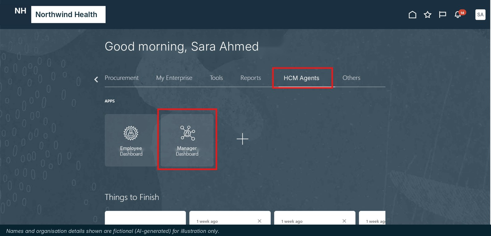
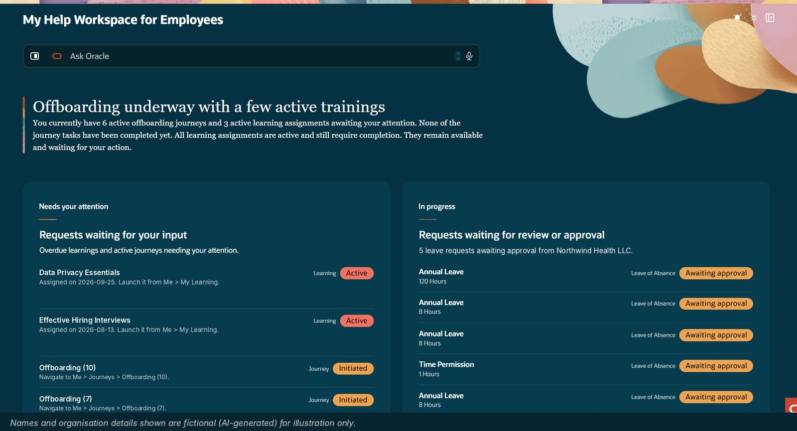
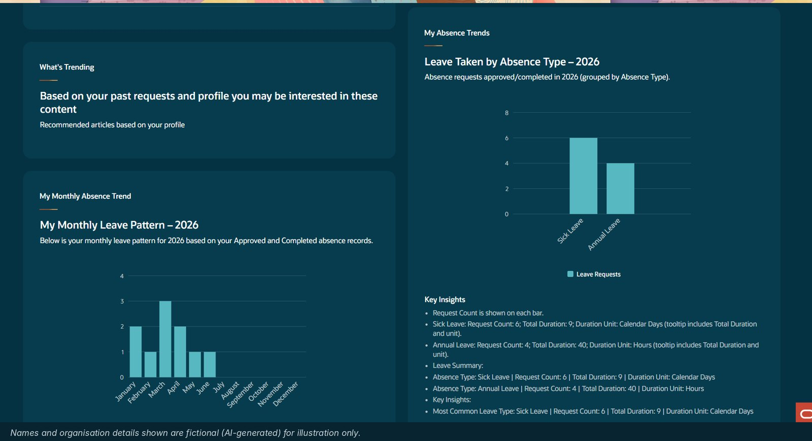
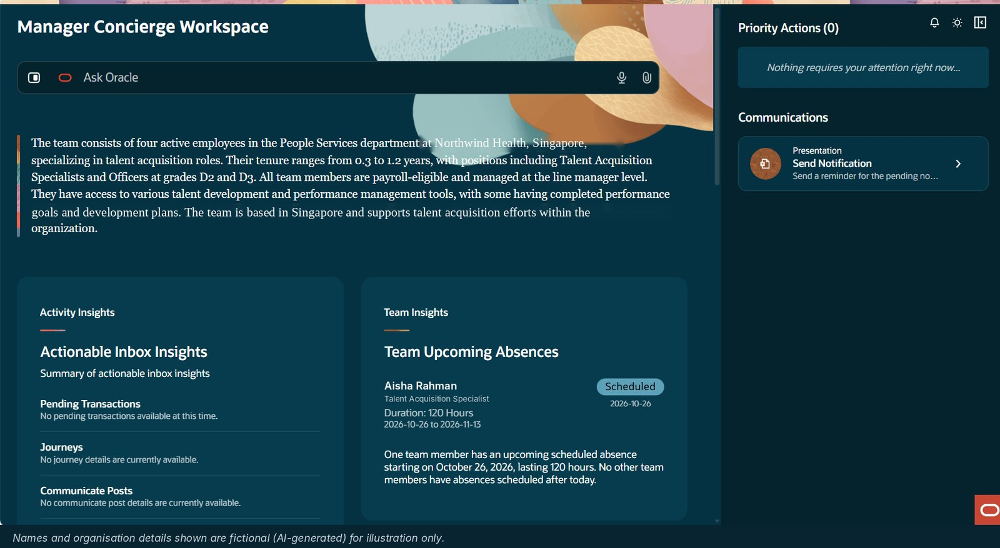
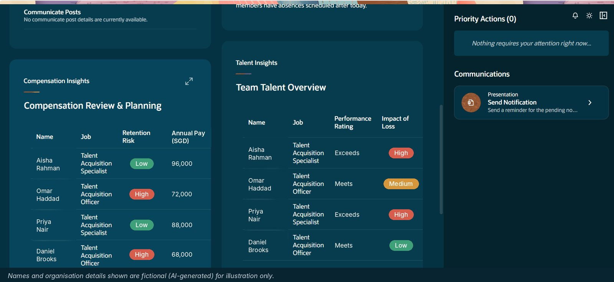

Agents that wait to be asked
Our HCM Agents already answer HR questions through Ask Oracle. But a chat agent only helps when someone thinks to ask. Open onboarding tasks, overdue courses, leave awaiting approval and who on the team is off next month were spread across Journeys, Learning, Absence and the notifications inbox.
So I tried a different approach: let the AI gather everything first and tell people where they stand.
Two workspaces, one Home page
Employee Concierge
What needs your attention, what is waiting on someone else, and how your leave has been used this year.
Manager Concierge
A team snapshot, priority actions, upcoming absences, plus talent, pay and retention risk.
Both sit next to the existing agents on the Fusion Home page, so there is nothing new to learn:

How it works
Employee: start with the AI summary
The workspace opens with a plain-English summary of where you stand. Needs your attention lists the courses and journey tasks waiting on you, each with where to go next. In progress shows requests waiting on someone else, such as leave awaiting approval.

Employee: check your leave
Scroll down for your monthly leave pattern and leave by absence type for the year, built from approved and completed absences, with key insights in days or hours.

Manager: get the team snapshot
For managers, the AI writes a short narrative of the team: size, roles, grades, tenure and location. Alongside it are priority actions, a one-click reminder to the team, pending items and upcoming absences for planning cover.

Manager: go deeper on talent and pay
Annual pay and retention risk for each person, plus performance rating and impact of loss. Any card expands to full screen.

Design choices that mattered
- Summary first. One AI-written paragraph tells people where they stand before they read any table.
- An overview, not a new transaction screen. Leave, learning and journeys are still done in their standard Fusion pages. The workspace points people there.
- Same security as HCM. Employees see only their own data; managers see only their direct team.
- Live data. The workspace reads the latest HCM data each time it opens.
What's done
Both workspaces are built, tested and documented with a quick-reference guide for employees and managers, ready for rollout.
What I learned
AI in HR isn't only about answering questions. It is about deciding what someone needs to see today and saying it in one sentence. Moving from a chat agent to a proactive workspace changes the question from "what can I ask?" to "what should I do next?".
If you're building with Oracle AI Agent Studio, I'd like to hear how you're approaching Agent Apps.
Names, organisation, pay and location details in the screenshots are fictional (AI-generated) for illustration only.